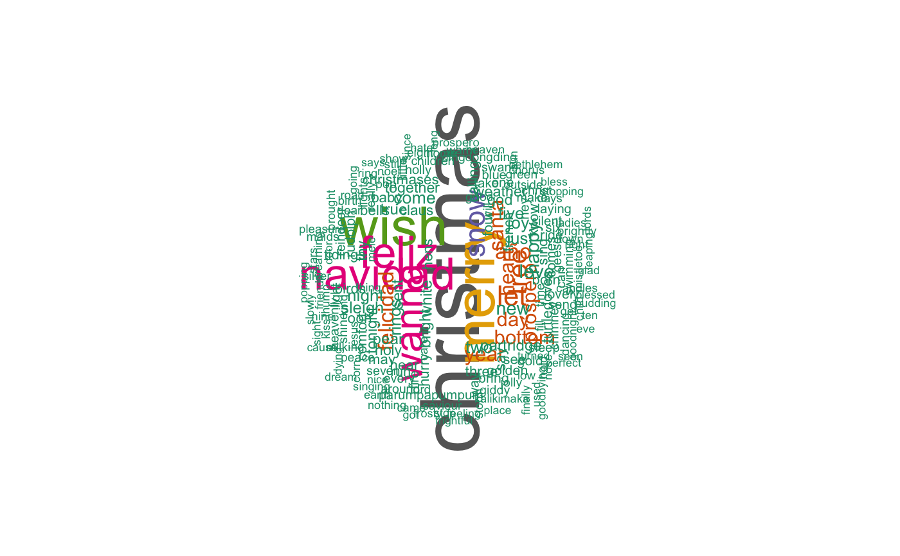

create_wordcloud.Rdcreate_wordcloud produces a wordcloud with the lyrics of songs in a playlist that
are already stored within the geniusR package.
create_wordcloud(data = data, playlist, stop_vector = F, del_file = T)
| data | a dataframe of a user's playlists |
|---|---|
| playlist | a character string |
| stop_vector | a boolean |
| del_file | a boolean |
a wordcloud generated from rquery
This function takes in a string of a playlist, a stop_vector that can remove certain common words like "yeah" and "like" (as well as any other words the user find as irrelevent), and del_file which is a boolean value that asserts whether the user wants to delete the output text file that is generated within the function and that stores all the lyrics that are accumulated for the purposes of generating the word cloud.
data(christmas_playlists) create_wordcloud(data = christmas_playlists, "Christmas Classics", c("yeah", "like"), del_file = T)#>#>#>#> #>#> #> #>#>#>#>#>#>#> Warning: the condition has length > 1 and only the first element will be used#> Warning: the condition has length > 1 and only the first element will be used#> Warning: the condition has length > 1 and only the first element will be used#> Warning: the condition has length > 1 and only the first element will be used#> Warning: the condition has length > 1 and only the first element will be used#> Warning: the condition has length > 1 and only the first element will be used#> Warning: the condition has length > 1 and only the first element will be used#> Warning: the condition has length > 1 and only the first element will be used#> Warning: the condition has length > 1 and only the first element will be used#> Warning: the condition has length > 1 and only the first element will be used#> Warning: the condition has length > 1 and only the first element will be used#> Warning: the condition has length > 1 and only the first element will be used#> Warning: the condition has length > 1 and only the first element will be used#> Warning: the condition has length > 1 and only the first element will be used#> Warning: the condition has length > 1 and only the first element will be used#> Warning: the condition has length > 1 and only the first element will be used#> Warning: the condition has length > 1 and only the first element will be used#> Warning: the condition has length > 1 and only the first element will be used#> Warning: the condition has length > 1 and only the first element will be used#> Warning: the condition has length > 1 and only the first element will be used#> Warning: the condition has length > 1 and only the first element will be used#> Warning: the condition has length > 1 and only the first element will be used#> Warning: the condition has length > 1 and only the first element will be used#> Warning: the condition has length > 1 and only the first element will be used#> Warning: the condition has length > 1 and only the first element will be used#> Warning: the condition has length > 1 and only the first element will be used#> Warning: the condition has length > 1 and only the first element will be used#> Warning: the condition has length > 1 and only the first element will be used#> Warning: the condition has length > 1 and only the first element will be used#> Warning: the condition has length > 1 and only the first element will be used#> Warning: the condition has length > 1 and only the first element will be used#> Warning: the condition has length > 1 and only the first element will be used#> Warning: the condition has length > 1 and only the first element will be used#> Warning: the condition has length > 1 and only the first element will be used#> Warning: the condition has length > 1 and only the first element will be used#> Warning: the condition has length > 1 and only the first element will be used#> Warning: the condition has length > 1 and only the first element will be used#> Warning: the condition has length > 1 and only the first element will be used#> Warning: the condition has length > 1 and only the first element will be used#> Warning: the condition has length > 1 and only the first element will be used#> Warning: the condition has length > 1 and only the first element will be used#> Warning: the condition has length > 1 and only the first element will be used#> Warning: the condition has length > 1 and only the first element will be used#> Warning: the condition has length > 1 and only the first element will be used#> Warning: the condition has length > 1 and only the first element will be used#> Warning: the condition has length > 1 and only the first element will be used#> Warning: the condition has length > 1 and only the first element will be used#> Warning: the condition has length > 1 and only the first element will be used#> Warning: the condition has length > 1 and only the first element will be used#> Warning: the condition has length > 1 and only the first element will be used#> Warning: the condition has length > 1 and only the first element will be used#> Warning: the condition has length > 1 and only the first element will be used#> Warning: the condition has length > 1 and only the first element will be used#> Warning: the condition has length > 1 and only the first element will be used#> Warning: the condition has length > 1 and only the first element will be used#> Warning: transformation drops documents#> Warning: transformation drops documents#> Warning: transformation drops documents#> Warning: transformation drops documents#> Warning: transformation drops documents#> $tdm #> <<TermDocumentMatrix (terms: 804, documents: 1817)>> #> Non-/sparse entries: 5538/1455330 #> Sparsity : 100% #> Maximal term length: 16 #> Weighting : term frequency (tf) #> #> $freqTable #> word freq #> christmas christmas 353 #> merry merry 226 #> wish wish 215 #> feliz feliz 168 #> navidad navidad 168 #> wanna wanna 146 #> snow snow 93 #> let let 88 #> tree tree 79 #> año año 56 #> felicidad felicidad 56 #> santa santa 54 #> year year 51 #> heart heart 50 #> day day 48 #> próspero próspero 48 #> bottom bottom 48 #> love love 44 #> happy happy 43 #> new new 41 #> two two 35 #> come come 34 #> joy joy 34 #> just just 32 #> night night 32 #> five five 32 #> rings rings 32 #> sleigh sleigh 31 #> white white 28 #> sent sent 28 #> thy thy 27 #> tonight tonight 26 #> bright bright 26 #> true true 26 #> partridge partridge 26 #> pear pear 26 #> say say 25 #> god god 24 #> weather weather 23 #> together together 23 #> holy holy 22 #> turtledoves turtledoves 22 #> hurry hurry 21 #> ooh ooh 21 #> claus claus 21 #> calling calling 21 #> birds birds 21 #> hear hear 20 #> baby baby 20 #> bells bells 20 #> christmases christmases 20 #> sing sing 20 #> tidings tidings 20 #> comfort comfort 20 #> french french 20 #> hens hens 20 #> three three 20 #> see see 19 #> may may 19 #> rudolph rudolph 19 #> born born 19 #> run run 19 #> know know 18 #> comes comes 18 #> four four 18 #> fire fire 17 #> way way 17 #> golden golden 17 #> lovely lovely 17 #> ride ride 17 #> bring bring 17 #> hey hey 16 #> gold gold 16 #> one one 15 #> reindeer reindeer 15 #> parumpapumpum parumpapumpum 15 #> send send 15 #> can can 14 #> chimney chimney 14 #> blue blue 14 #> light light 14 #> take take 14 #> sleep sleep 14 #> silent silent 14 #> heavenly heavenly 14 #> geese geese 14 #> laying laying 14 #> six six 14 #> holly holly 13 #> lights lights 13 #> every every 13 #> shine shine 13 #> will will 12 #> make make 12 #> giddy giddy 12 #> pop pop 12 #> christ christ 12 #> seven seven 12 #> swans swans 12 #> swimming swimming 12 #> dingdongding dingdongding 11 #> jolly jolly 11 #> around around 11 #> good good 11 #> little little 11 #> green green 11 #> children children 11 #> peace peace 11 #> time time 10 #> really really 10 #> home home 10 #> dear dear 10 #> still still 10 #> care care 10 #> dancing dancing 10 #> lord lord 10 #> birth birth 10 #> eight eight 10 #> maids maids 10 #> milking milking 10 #> outside outside 9 #> low low 9 #> storm storm 9 #> hold hold 9 #> warm warm 9 #> get get 9 #> right right 9 #> saviour saviour 9 #> noel noel 9 #> pleasure pleasure 9 #> brightly brightly 9 #> candles candles 9 #> show show 8 #> brought brought 8 #> ring ring 8 #> days days 8 #> dreaming dreaming 8 #> road road 8 #> chorus chorus 8 #> silver silver 8 #> king king 8 #> heaven heaven 8 #> thump thump 8 #> stars stars 8 #> jesus jesus 8 #> prospero prospero 8 #> ladies ladies 8 #> nine nine 8 #> friends friends 7 #> mistletoe mistletoe 7 #> kiss kiss 7 #> corn corn 7 #> singing singing 7 #> thing thing 7 #> fill fill 7 #> sun sun 7 #> earth earth 7 #> nothing nothing 7 #> nose nose 7 #> child child 7 #> came came 7 #> town town 7 #> frosty frosty 7 #> kalikimaka kalikimaka 7 #> mele mele 7 #> frightful frightful 6 #> place place 6 #> since since 6 #> signs signs 6 #> stopping stopping 6 #> popping popping 6 #> turned turned 6 #> finally finally 6 #> goodnight goodnight 6 #> going going 6 #> hate hate 6 #> dying dying 6 #> slowly slowly 6 #> goodbying goodbying 6 #> long long 6 #> says says 6 #> nice nice 6 #> stop stop 6 #> feeling feeling 6 #> holiday holiday 6 #> sight sight 6 #> ahh ahh 6 #> used used 6 #> cause cause 6 #> got got 6 #> perfect perfect 6 #> things things 6 #> eve eve 6 #> repeat repeat 6 #> rumpapumpum rumpapumpum 6 #> giddyyap giddyyap 6 #> mother mother 6 #> dream dream 6 #> son son 6 #> seen seen 6 #> glad glad 6 #> bless bless 6 #> door door 6 #> bethlehem bethlehem 6 #> blessed blessed 6 #> leaping leaping 6 #> lords lords 6 #> ten ten 6 #> pudding pudding 6 #> golly golly 5 #> cold cold 5 #> rocking rocking 5 #> pie pie 5 #> pumpkin pumpkin 5 #> caroling caroling 5 #> now now 5 #> palm palm 5 #> sway sway 5 #> trees trees 5 #> lane lane 5 #> poor poor 5 #> loves loves 5 #> makes makes 5 #> watch watch 5 #> remember remember 5 #> eyes eyes 5 #> santas santas 5 #> glee glee 5 #> grace grace 5 #> tell tell 5 #> mary mary 5 #> snowman snowman 5 #> made made 5 #> greeting greeting 5 #> round round 5 #> best best 4 #> street street 4 #> lots lots 4 #> party party 4 #> voices voices 4 #> old old 4 #> think think 4 #> next next 4 #> angel angel 4 #> cutie cutie 4 #> trim trim 4 #> believe believe 4 #> yuletide yuletide 4 #> away away 4 #> without without 4 #> never never 4 #> hills hills 4 #> ones ones 4 #> glisten glisten 4 #> listen listen 4 #> treetops treetops 4 #> card card 4 #> write write 4 #> blitzen blitzen 4 #> vixen vixen 4 #> jingling jingling 4 #> ringtingtingling ringtingtingling 4 #> look look 4 #> hand hand 4 #> songs songs 4 #> chestnuts chestnuts 4 #> world world 4 #> tiny tiny 4 #> said said 4 #> rednosed rednosed 4 #> wonders wonders 4 #> freeway freeway 4 #> merrygoround merrygoround 4 #> reeling reeling 4 #> drum drum 4 #> thumpety thumpety 4 #> land land 4 #> hawaiis hawaiis 4 #> gosh gosh 4 #> calm calm 4 #> virgin virgin 4 #> yon yon 4 #> infant infant 4 #> mild mild 4 #> tender tender 4 #> quake quake 4 #> shepherd shepherd 4 #> afar afar 4 #> glorious glorious 4 #> alleluia alleluia 4 #> hosts hosts 4 #> pure pure 4 #> beams beams 4 #> face face 4 #> radiant radiant 4 #> dawn dawn 4 #> redeeming redeeming 4 #> darling darling 4 #> logs logs 4 #> desire desire 4 #> thee thee 4 #> eleven eleven 4 #> pipers pipers 4 #> piping piping 4 #> figgy figgy 4 #> piggy piggy 4 #> cheer cheer 3 #> hung hung 3 #> delightful delightful 3 #> tight tight 3 #> fires fires 3 #> gloosy gloosy 3 #> glow glow 3 #> sitting sitting 3 #> blow blow 3 #> winds winds 3 #> goes goes 3 #> oooooh oooooh 3 #> wee wee 3 #> worry worry 3 #> gal gal 3 #> side side 3 #> mmmdelightful mmmdelightful 3 #> yight yight 3 #> girl girl 3 #> fun fun 3 #> lot lot 3 #> decorations decorations 3 #> near near 3 #> shining shining 3 #> longing longing 3 #> morn morn 3 #> falling falling 3 #> riding riding 3 #> wonderland wonderland 3 #> grand grand 3 #> holding holding 3 #> cheeks cheeks 3 #> rosy rosy 3 #> comfy comfy 3 #> cozy cozy 3 #> snuggled snuggled 3 #> feather feather 3 #> farmer farmer 3 #> gray gray 3 #> ending ending 3 #> single single 3 #> fireplace fireplace 3 #> buy buy 3 #> coffee coffee 3 #> pass pass 3 #> currier currier 3 #> ives ives 3 #> nearly nearly 3 #> picture picture 3 #> print print 3 #> lives lives 3 #> wonderful wonderful 3 #> folks folks 3 #> everybody everybody 3 #> city city 3 #> smile smile 3 #> even even 3 #> rush rush 3 #> big big 3 #> saw saw 3 #> laugh laugh 3 #> nature nature 3 #> men men 3 #> fields fields 3 #> sounding sounding 3 #> angels angels 3 #> first first 3 #> certain certain 3 #> lay lay 3 #> shepherds shepherds 3 #> deep deep 3 #> went went 3 #> story story 3 #> well well 3 #> morning morning 3 #> name name 3 #> life life 3 #> streets streets 3 #> back back 3 #> bing bing 3 #> hawaiian hawaiian 3 #> island island 3 #> among among 3 #> leaves leaves 3 #> coma coma 3 #> wandering wandering 3 #> fair fair 3 #> beggars beggars 3 #> daily daily 3 #> friendly friendly 3 #> neighbours neighbours 3 #> wherever wherever 3 #> traditional traditional 3 #> arranged arranged 3 #> charles charles 3 #> ray ray 3 #> brings brings 3 #> bough bough 3 #> sparkle sparkle 3 #> toy toy 3 #> cup cup 2 #> walk walk 2 #> hello hello 2 #> everyone everyone 2 #> meet meet 2 #> somebody somebody 2 #> waits waits 2 #> case case 2 #> dingdongdingdong dingdongdingdong 2 #> spirit spirit 2 #> later later 2 #> sentimental sentimental 2 #> boughs boughs 2 #> deck deck 2 #> halls halls 2 #> everyones everyones 2 #> merrily merrily 2 #> fashioned fashioned 2 #> sable sable 2 #> slip slip 2 #> awful awful 2 #> convertible convertible 2 #> wait wait 2 #> missed missed 2 #> fellas fellas 2 #> kissed kissed 2 #> check check 2 #> list list 2 #> yacht yacht 2 #> honey honey 2 #> need need 2 #> deed deed 2 #> mine mine 2 #> platinum platinum 2 #> duplex duplex 2 #> stocking stocking 2 #> checks checks 2 #> line line 2 #> sign sign 2 #> bought bought 2 #> tiffanys tiffanys 2 #> forgot forgot 2 #> mention mention 2 #> mean mean 2 #> phone phone 2 #> troubles troubles 2 #> someday someday 2 #> soon soon 2 #> red red 2 #> start start 2 #> doin doin 2 #> oooooaaaooooh oooooaaaooooh 2 #> grass grass 2 #> orange orange 2 #> beverly beverly 2 #> december december 2 #> twentyfourth twentyfourth 2 #> north north 2 #> pullin pullin 2 #> reins reins 2 #> ringin ringin 2 #> singin singin 2 #> hang hang 2 #> prayers prayers 2 #> stockings stockings 2 #> toys toys 2 #> jingle jingle 2 #> head head 2 #> knows knows 2 #> give give 2 #> yoohoo yoohoo 2 #> like like 2 #> carols carols 2 #> dressed dressed 2 #> kids kids 2 #> many many 2 #> sidewalks sidewalks 2 #> christmastime christmastime 2 #> dancer dancer 2 #> dasher dasher 2 #> prancer prancer 2 #> comet comet 2 #> cupid cupid 2 #> donner donner 2 #> famous famous 2 #> recall recall 2 #> shiny shiny 2 #> ever ever 2 #> glows glows 2 #> call call 2 #> names names 2 #> games games 2 #> join join 2 #> foggy foggy 2 #> guide guide 2 #> loved loved 2 #> shouted shouted 2 #> history history 2 #> winters winters 2 #> israel israel 2 #> star star 2 #> far far 2 #> great great 2 #> boy boy 2 #> whizzing whizzing 2 #> please please 2 #> cry cry 2 #> drink drink 2 #> gifts gifts 2 #> play play 2 #> played played 2 #> heard heard 2 #> knew knew 2 #> button button 2 #> pipe pipe 2 #> coal coal 2 #> rolled rolled 2 #> surprised surprised 2 #> catch catch 2 #> paused paused 2 #> sayin sayin 2 #> jingleing jingleing 2 #> ting ting 2 #> tingleing tingleing 2 #> giving giving 2 #> starlight starlight 2 #> hymn hymn 2 #> fancy fancy 2 #> grannys grannys 2 #> pies pies 2 #> ties ties 2 #> stealin stealin 2 #> whisper whisper 2 #> cards cards 2 #> special special 2 #> apart apart 2 #> dreams dreams 2 #> christmasing christmasing 2 #> holidays holidays 2 #> joyful joyful 2 #> always always 2 #> something something 2 #> chorusjohn chorusjohn 2 #> crosbymax crosbymax 2 #> mixed mixed 2 #> orchestra orchestra 2 #> scott scott 2 #> terrs terrs 2 #> trotter trotter 2 #> notes notes 2 #> written written 2 #> gentlemen gentlemen 2 #> rest rest 2 #> dismay dismay 2 #> savior savior 2 #> power power 2 #> satans satans 2 #> save save 2 #> astray astray 2 #> gone gone 2 #> jewry jewry 2 #> babe babe 2 #> laid laid 2 #> manger manger 2 #> within within 2 #> upon upon 2 #> scorn scorn 2 #> father father 2 #> unto unto 2 #> lie lie 2 #> dreamless dreamless 2 #> dark dark 2 #> everlasting everlasting 2 #> shineth shineth 2 #> yet yet 2 #> fears fears 2 #> hopes hopes 2 #> met met 2 #> years years 2 #> gathered gathered 2 #> keep keep 2 #> mortals mortals 2 #> wondering wondering 2 #> proclaim proclaim 2 #> praises praises 2 #> second second 2 #> third third 2 #> fourth fourth 2 #> fifth fifth 2 #> sixth sixth 2 #> seventh seventh 2 #> eighth eighth 2 #> ninth ninth 2 #> tenth tenth 2 #> eleventh eleventh 2 #> twelfth twelfth 2 #> drummers drummers 2 #> drumming drumming 2 #> twelve twelve 2 #> figs figs 2 #> miss miss 2 #> sorry sorry 2 #> bacon bacon 2 #> animal animal 2 #> sit sit 2 #> hop hop 1 #> couple couple 1 #> evry evry 1 #> tries tries 1 #> gay gay 1 #> miles miles 1 #> olden olden 1 #> yore yore 1 #> faithful faithful 1 #> allow allow 1 #> fates fates 1 #> muddle muddle 1 #> somehow somehow 1 #> thinking thinking 1 #> fallin fallin 1 #> snowflakes snowflakes 1 #> callin callin 1 #> memories memories 1 #> bag bag 1 #> filled filled 1 #> boys boys 1 #> girls girls 1 #> jangle jangle 1 #> beautiful beautiful 1 #> bed bed 1 #> cover cover 1 #> jump jump 1 #> rich rich 1 #> gods gods 1 #> everything everything 1 #> hearts hearts 1 #> chimes chimes 1 #> follow follow 1 #> thanks thanks 1 #> open open 1 #> roasting roasting 1 #> frost frost 1 #> jack jack 1 #> nipping nipping 1 #> choir choir 1 #> sung sung 1 #> eskimos eskimos 1 #> turkey turkey 1 #> help help 1 #> season season 1 #> aglow aglow 1 #> tots tots 1 #> find find 1 #> hard hard 1 #> goodies goodies 1 #> loaded loaded 1 #> evrymothers evrymothers 1 #> gonna gonna 1 #> spy spy 1 #> fly fly 1 #> offering offering 1 #> phrase phrase 1 #> simple simple 1 #> ninetytwo ninetytwo 1 #> although although 1 #> times times 1 #> ways ways 1 #> busy busy 1 #> style style 1 #> air air 1 #> laughing laughing 1 #> meeting meeting 1 #> passing passing 1 #> people people 1 #> corner corner 1 #> ringling ringling 1 #> blink blink 1 #> strings strings 1 #> shoppers shoppers 1 #> treasures treasures 1 #> bunch bunch 1 #> crush crush 1 #> scene scene 1 #> bustle bustle 1 #> receive receive 1 #> prepare prepare 1 #> room room 1 #> reigns reigns 1 #> employ employ 1 #> floods floods 1 #> plains plains 1 #> rocks rocks 1 #> rules rules 1 #> truth truth 1 #> nations nations 1 #> prove prove 1 #> glories glories 1 #> righteousnes righteousnes 1 #> keeping keeping 1 #> sheep sheep 1 #> looked looked 1 #> beyond beyond 1 #> east east 1 #> gave gave 1 #> continued continued 1 #> mastermind mastermind 1 #> reindeers reindeers 1 #> aint aint 1 #> behind behind 1 #> randalph randalph 1 #> electric electric 1 #> guitar guitar 1 #> rock rock 1 #> roll roll 1 #> want want 1 #> shooting shooting 1 #> doll doll 1 #> wet wet 1 #> jet jet 1 #> saber saber 1 #> told told 1 #> newborn newborn 1 #> finest finest 1 #> honor honor 1 #> jesu jesu 1 #> fit fit 1 #> shall shall 1 #> nodded nodded 1 #> kept kept 1 #> lass lass 1 #> smiled smiled 1 #> closer closer 1 #> gee gee 1 #> man man 1 #> fame fame 1 #> gain gain 1 #> begin begin 1 #> refer refer 1 #> ooooh ooooh 1 #> soul soul 1 #> cob cob 1 #> magic magic 1 #> must must 1 #> cap cap 1 #> found found 1 #> silk silk 1 #> placed placed 1 #> began began 1 #> dance dance 1 #> alive alive 1 #> corncob corncob 1 #> finish finish 1 #> jimmy jimmy 1 #> uncle uncle 1 #> breath breath 1 #> happened happened 1 #> trouble trouble 1 #> hot hot 1 #> melt melt 1 #> broomstick broomstick 1 #> village village 1 #> runnin runnin 1 #> square square 1 #> led led 1 #> cop cop 1 #> traffic traffic 1 #> holler holler 1 #> moment moment 1 #> goodbye goodbye 1 #> waved waved 1 #> crosby crosby 1 #> andrew andrew 1 #> sisters sisters 1 #> merrymerry merrymerry 1 #> hoo hoo 1 #> along along 1 #> fairy fairy 1 #> gliding gliding 1 #> song song 1 #> wintry wintry 1 #> birthday birthday 1 #> pheasants pheasants 1 #> presents presents 1 #> tasty tasty 1 #> countrysides countrysides 1 #> covered covered 1 #> kringle kringle 1 #> kris kris 1 #> greetings greetings 1 #> overeating overeating 1 #> relatives relatives 1 #> gather gather 1 #> neighbors neighbors 1 #> share share 1 #> cease cease 1 #> labors labors 1 #> yes yes 1 #> toast toast 1 #>